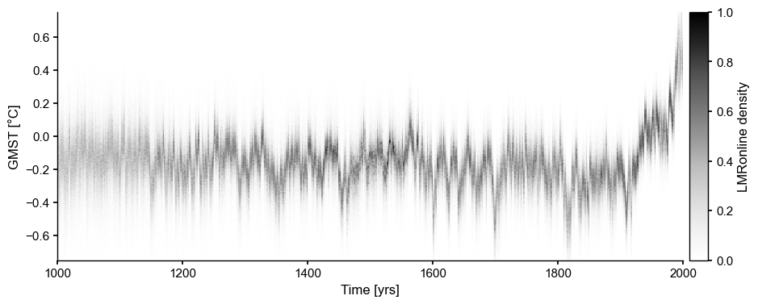
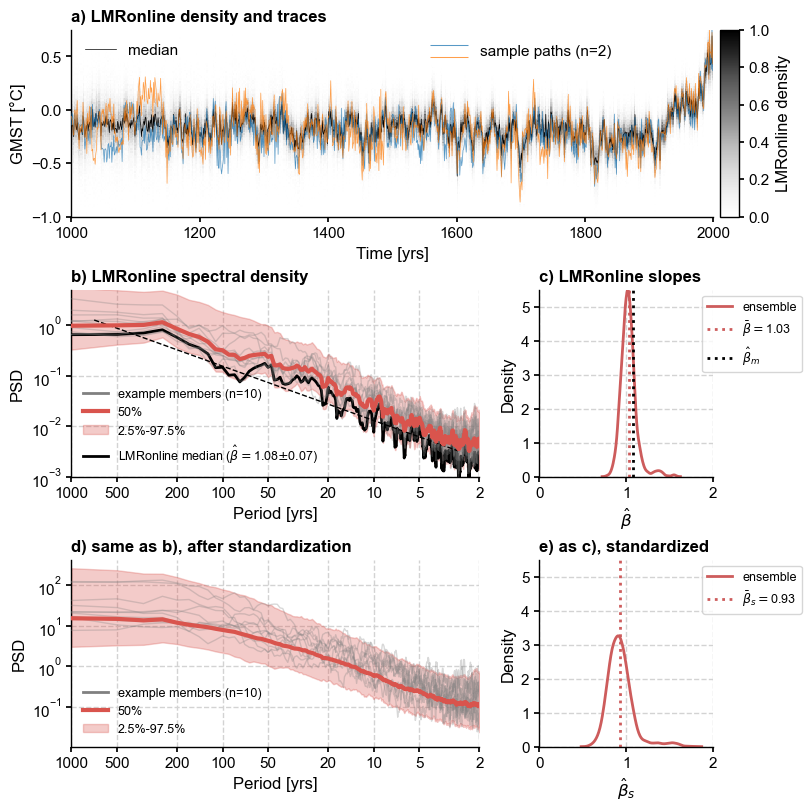
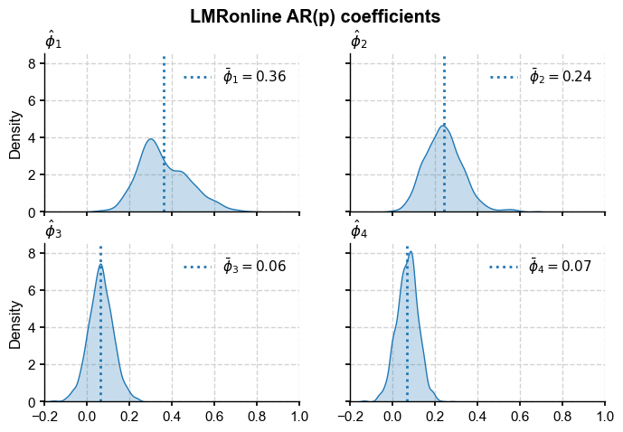
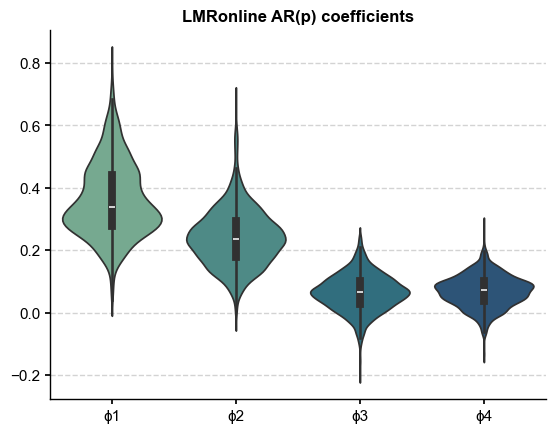
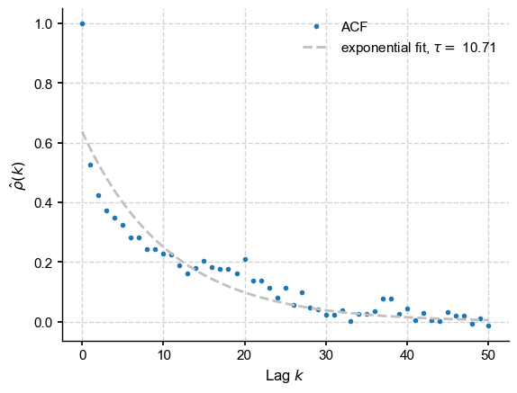
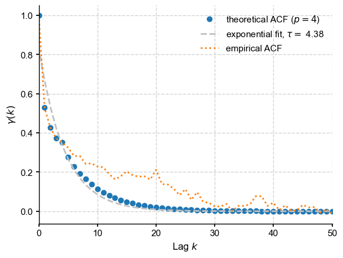
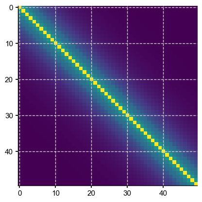
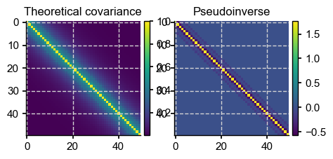

[Figs. 3-4] LMRonline#
This notebook investigates the spectral properties of the LMRonline ensemble, and reproduces Figs 3-4 of the paper.
[1]:
%load_ext autoreload
%autoreload 2
import pens
import matplotlib.pyplot as plt
import numpy as np
import seaborn as sns
plt.style.use('default')
pens.set_style()
Unlike offline DA, online DA (Perkins & Hakim, 2021) links together consecutive time points via a propagator (in this case, a linear inverse model fit to CCSM4), which drastically compresses the uncertainty range. For instance, using the experiment production_ccsm4_pagesv2_wCoral_gis_seaslinobj_online_20m20sOHC_past1000 from the original repository:
[2]:
LMRo = pens.EnsembleTS().load_nc('../data/gmt_MCruns_ensemble_full_LMRonline.nc', var='glob_mean', time_name='year')
LMRo.label = 'LMRonline'
LMRo.value_name = 'GMST'
LMRo.value_unit = '\N{DEGREE SIGN}C'
LMRo.time_name = 'Time'
LMRo.time_unit = 'yrs'
fig, ax = fig, ax = LMRo.line_density(ylim=[-.75,.75])

Online DA: Original ensemble#
first, we subsample the online DA ensemble, which includes 50 iterations instead of the 20 used in LMR 2.1. To compare apples to apples, we need identical ensemble sizes for both.
[3]:
PH21_20 = LMRo.subsample(nsamples=2000)
PH21_20s = (PH21_20 - PH21_20.get_mean()) / PH21_20.get_std()
[4]:
es_o = PH21_20.to_pyleo(verbose=False)
PSD_o = es_o.spectral(method='mtm',settings={'standardize':False}) # this generates a MultiplePSD object
Performing spectral analysis on individual series: 100%|██████████| 2000/2000 [00:09<00:00, 214.43it/s]
[5]:
es_os = PH21_20s.to_pyleo(verbose=False)
PSD_os = es_os.spectral(method='mtm',settings={'standardize':False}) # this generates a MultiplePSD object
Performing spectral analysis on individual series: 100%|██████████| 2000/2000 [00:09<00:00, 211.15it/s]
apply anti-alias filter and estimate slopes
[6]:
PSD_oaa = PSD_o.anti_alias()
PSD_osaa = PSD_os.anti_alias()
beta_o = PSD_oaa.beta_est()
beta_os = PSD_osaa.beta_est()
Applying the anti-alias filter: 100%|██████████| 2000/2000 [00:11<00:00, 172.27it/s]
Applying the anti-alias filter: 100%|██████████| 2000/2000 [00:11<00:00, 178.14it/s]
[7]:
fig3 = plt.figure(constrained_layout=True, figsize = (8,8))
gs = fig3.add_gridspec(3, 3)
# traces
ax1 = fig3.add_subplot(gs[0, :])
xlabel , ylabel = LMRo.make_labels()
#PH21_20.plot_hdi(prob=0.95, ax=ax1, ylim=[-1,.75],color='silver',median=False)
PH21_20.line_density(ax=ax1, ylim=[-1,.75])
PH21_20.get_median().plot(color='k',label='median',ax=ax1, linewidth=0.5)
lgd1 = ax1.legend(ncol=2, loc='upper left')
ax1.add_artist(lgd1)
PH21_20.plot_traces(ax=ax1, num_traces = 2, alpha=0.75, seed = 208, xlabel = xlabel, ylabel=ylabel,
lgd_kwargs={'loc': 'upper center', 'bbox_to_anchor': (0.7, 1.05)})
ax1.set_title('a) ' + LMRo.label + ' density and traces',
fontweight='bold', loc='left')
# raw spectra
ax2 = fig3.add_subplot(gs[1, :-1])
PSD_oaa.plot_envelope(ax=ax2, title='')
esm_o = PH21_20.get_median() # extract and analyze the ensemble median
esm_o = esm_o.to_pyleo(label='LMRonline median',verbose=False)
esm_o_spec = esm_o.spectral(method ='mtm', settings={'standardize':False})
esm_o_beta = esm_o_spec.anti_alias().beta_est() # estimate spectral exponent
esm_o_beta.plot(ax=ax2, ylim=[1e-3,5], color='black', lgd_kwargs={'fontsize':9})
ax2.set_title('b) ' + LMRo.label + ' spectral density',
fontweight='bold', loc='left')
# beta dist
ax3 = fig3.add_subplot(gs[1, -1])
sns.kdeplot(beta_o.beta_est_res['beta'], color = 'indianred',
label = 'ensemble',ax=ax3) # plot their distribution
bo = np.array(beta_o.beta_est_res['beta'])
ax3.axvline(x=bo.mean(),color='indianred', # plot its mean
linestyle=':',label=fr'$\bar \beta = ${bo.mean():3.2f}')
ax3.axvline(x=esm_o_beta.beta_est_res['beta'],color='black',
linestyle=':',label=r'$\hat{\beta}_m$')
ax3.legend(fontsize=9, bbox_to_anchor = [0.9, 1], frameon=True, framealpha=0.8)
ax3.set_title('c) LMRonline slopes', fontweight='bold', loc='left')
ax3.set_xlabel(r'$\hat{\beta}$')
beta_xlims = [0, 2]
beta_ylims = [0, 5.5]
ax3.set_xlim(beta_xlims)
ax3.set_ylim(beta_ylims)
# standardized spectra
ax4 = fig3.add_subplot(gs[-1, :-1])
PSD_osaa.plot_envelope(ax=ax4, title='', lgd_kwargs={'fontsize':9})
ax4.set_title('d) same as b), after standardization',
fontweight='bold', loc='left')
ax4.set_xlabel(ax2.get_xlabel())
# beta dist
ax5 = fig3.add_subplot(gs[-1, -1])
sns.kdeplot(beta_os.beta_est_res['beta'], color = 'indianred',
label = 'ensemble', ax=ax5) # plot their distribution
bos = np.array(beta_os.beta_est_res['beta'])
ax5.axvline(x=bos.mean(),color='indianred', # plot its mean
linestyle=':',label=fr'$\bar \beta_s = ${bos.mean():3.2f}')
ax5.legend(fontsize=9, bbox_to_anchor = [0.9, 1], frameon=True, framealpha=0.8)
ax5.set_title('e) as c), standardized', fontweight='bold', loc='left')
ax5.set_xlim(ax3.get_xlim())
ax5.set_xlabel(r'$\hat{\beta}_s$')
ax5.set_xlim(beta_xlims)
ax5.set_ylim(beta_ylims)
fig.tight_layout()

Estimate AR model parameters#
[9]:
from statsmodels.tsa.ar_model import AutoReg
model_order = 4
phi = np.zeros((PH21_20s.nEns,model_order+1))
sigma2 = np.zeros(PH21_20s.nEns)
for i in range(PH21_20s.nEns):
x = PH21_20s.value[:,i]
ts_mod = AutoReg(x, model_order) # set up the model
ts_res = ts_mod.fit(cov_type='HAC', cov_kwds={'maxlags': model_order}) # Heteroskedasticity-autocorrelation robust covariance estimation.
phi[i,:] = ts_res.params # export estimated parameters
sigma2[i] = ts_res.sigma2 / x.var() #export variance
[10]:
import seaborn as sns
fig, axs = plt.subplots(2,2,figsize=(8,5), sharex=True, sharey=True)
axs = axs.flatten()
xmin, xmax = -.2, 1
for i in range(4):
sns.kdeplot(phi[:,i+1],ax=axs[i],fill=True, common_norm=False)
xm = phi[:,i+1].mean()
axs[i].axvline(x=xm,color='C0', # plot its mean
linestyle=':',label=fr'$\bar \phi_{i+1} = {xm:3.2f}$')
axs[i].set_title(r'$\hat{\phi}_'+str(i+1)+'$',visible=True,
fontweight='bold', loc='left')
axs[i].legend(loc='upper right')
axs[i].set_xlim(xmin,xmax)
fig.suptitle('LMRonline AR(p) coefficients',fontweight='bold')

Export to CSV#
[11]:
import pandas as pd
df = pd.DataFrame({'ϕ0':phi[:,0],'ϕ1':phi[:,1],'ϕ2':phi[:,2], 'ϕ3':phi[:,3], 'ϕ4':phi[:,4],'var':sigma2})
df.index.names = ['ens member']
df.head()
[11]:
| ϕ0 | ϕ1 | ϕ2 | ϕ3 | ϕ4 | var | |
|---|---|---|---|---|---|---|
| ens member | ||||||
| 0 | 0.086881 | 0.341373 | 0.335213 | -0.000344 | 0.048482 | 0.616616 |
| 1 | -0.045653 | 0.219124 | 0.212529 | 0.111056 | 0.057306 | 0.793391 |
| 2 | -0.041159 | 0.317688 | 0.186505 | 0.080195 | 0.077135 | 0.724135 |
| 3 | 0.027265 | 0.360773 | 0.157698 | 0.121841 | 0.081147 | 0.657210 |
| 4 | -0.012639 | 0.249381 | 0.287005 | 0.023913 | 0.092512 | 0.714747 |
[12]:
df.to_csv('../data/LMRonline_ARfit.csv')
Violin Plots#
A more compact visualization of the model fit
[13]:
fig, ax = plt.subplots()
phi_df = df.drop(columns=['ϕ0','var'])
sns.violinplot(phi_df,palette='crest',ax=ax)
ax.set_title('LMRonline AR(p) coefficients',fontweight='bold')

Autocovariance#
(no longer used in the paper, but instructive)
[14]:
import statsmodels as sm
import scipy
nlags = 50
j=43
x = PH21_20s.value[:,j]
acf = sm.tsa.stattools.acf(x,nlags=nlags, adjusted = True)
Sigma_acf = scipy.linalg.toeplitz(acf)
Let’s try an exponential fit:
[15]:
def monoExp(lag, A, tau):
return A * np.exp(-lag/tau)
from scipy.optimize import curve_fit
# perform the fit
lags = np.arange(nlags+1)
p0 = (1, 10) # start with values near those we expect
params, cv = scipy.optimize.curve_fit(monoExp, lags, acf, p0)
exp_fit = monoExp(lags, params[0], params[1])
[16]:
# plot the results
fig, ax = plt.subplots()
ax.plot(lags, acf, '.', label='ACF')
ax.plot(lags, exp_fit, '--', color = 'silver',
label=fr'exponential fit, $\tau = $ {params[1]:3.2f}')
ax.set_ylabel(r'$\hat{\rho}(k)$')
ax.set_xlabel(r'Lag $k$')
ax.legend()
[16]:
<matplotlib.legend.Legend at 0x35b2e0320>

Respectable fit, except for the first value. Let us try to compute the ACF’s theoretical value from the dedicated statsmodel function
[17]:
arparams = np.r_[1, -phi[j,1:]] # AR model parameters
maparams = np.r_[1, 0.0] # MA model parameters
acf_theor = sm.tsa.arima_process.arma_acf(ar = arparams, ma = maparams,lags=nlags+1)
params, cv = scipy.optimize.curve_fit(monoExp, lags, acf_theor, p0)
exp_fit = monoExp(lags, params[0], params[1])
[18]:
fig, ax = plt.subplots()
ax.plot(acf_theor, 'o', label = fr'theoretical ACF ($p={model_order:d}$)')
ax.plot(lags, exp_fit, '--', color = 'silver',
label=fr'exponential fit, $\tau = $ {params[1]:3.2f}')
ax.plot(acf, label='empirical ACF',ls='dotted')
ax.set_xlim(0,nlags)
ax.set_ylabel(r'$\gamma(k)$')
ax.set_xlabel(r'Lag $k$')
ax.legend()

Now let us form \(\Sigma_{ij} = \gamma(|i-j|)\):
[19]:
rho_theor = np.zeros((PH21_20s.nt))
rho_theor[:nlags+1] = acf_theor
Sigma_theor = scipy.linalg.toeplitz(rho_theor)
[20]:
p = nlags
plt.imshow(Sigma_theor[:p,:p], interpolation='None')
[20]:
<matplotlib.image.AxesImage at 0x16b3f5550>

So far so good. Let us compute the determinant:
[21]:
np.linalg.det(Sigma_theor)
[21]:
2.340263941900679e-173
[22]:
np.linalg.det(Sigma_theor[:p,:p])
[22]:
3.8528087646237915e-09
Both are very small, but clearly size is a factor here: even with the same endlessly repeating exponential decay away from the diagonal, the determinant keeps shrinking as matrix size is increased. According to Reichel & Trefethen, 1992, Toeplitz matrices have “condition numbers that increase exponentially with the dimension”, so this is expected behavior.
What are the consequences for matrix inversion?
[23]:
p = 50
f, axs = plt.subplots(1,2, figsize = (5,10))
from mpl_toolkits.axes_grid1 import make_axes_locatable
im1 = axs[0].imshow(Sigma_theor[:p,:p], interpolation='None')
divider = make_axes_locatable(axs[0])
cax = divider.append_axes('right', size='5%', pad=0.05)
fig.colorbar(im1, cax=cax, orientation='vertical')
axs[0].set_title(r'Theoretical covariance')
iSig1 = np.linalg.pinv(Sigma_theor)
im2 = axs[1].imshow(iSig1[:p,:p], interpolation='None')
axs[1].set_title(r'Pseudoinverse')
divider = make_axes_locatable(axs[1])
cax = divider.append_axes('right', size='5%', pad=0.05)
fig.colorbar(im2, cax=cax, orientation='vertical');
fig.tight_layout()
#axs[1].colorbar()

At least the pseudoinverse is presentable. Since this is how SciPy computes the multivariate normal PDF when the specified covariance matrix is wonky, there is hope. In fact, it goes through the function without a hitch, but the problem is that with a size of 2001, the likelihood is vanishingly small, even for the mean (which should have the highest likelihood):